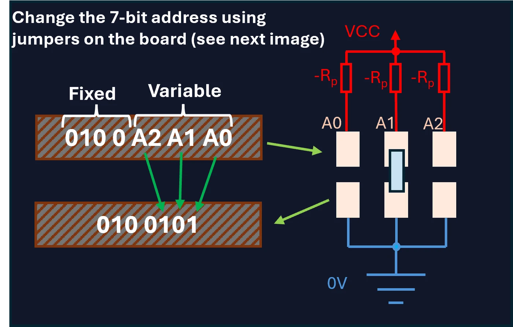
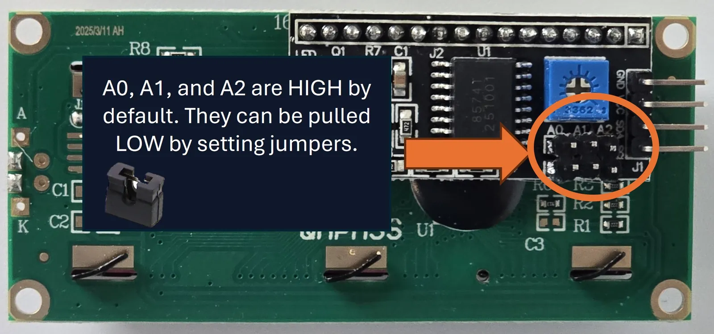
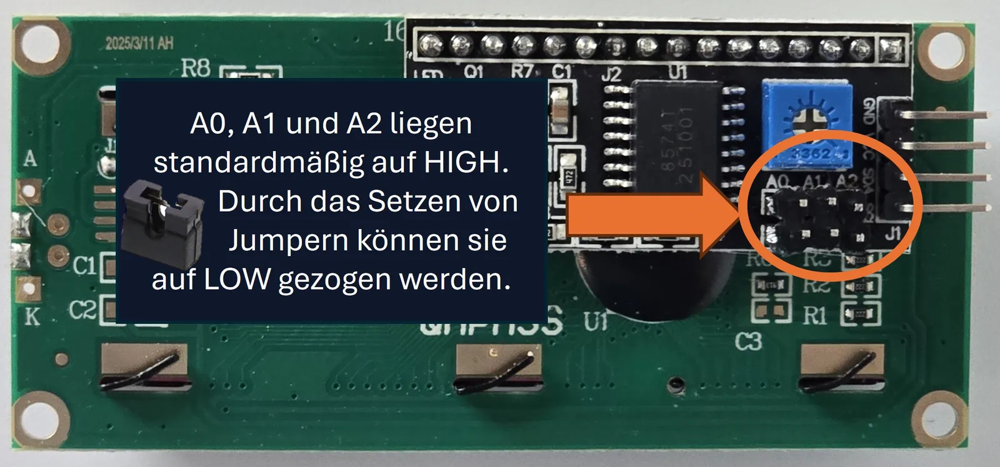

Open drain and pull-up resistorsOpen-Drain und Pull-up-Widerstände
As future system electronics technicians, you need to know what happens electrically on the bus. I²C uses an open-drain (for FETs) or open-collector (for bipolar transistors) architecture.
Als angehende Systemelektroniker müssen Sie wissen, was elektrisch auf dem Bus passiert. I²C verwendet eine Open-Drain- (bei FETs) oder Open-Collector-Architektur (bei Bipolartransistoren).
This means: a bus participant can only pull the line to ground (LOW) and not actively drive it to VCC (HIGH).
Das bedeutet: Ein Busteilnehmer kann die Leitung nur auf Masse (LOW) ziehen und nicht aktiv auf VCC (HIGH).
Important for practice!Wichtig für die Praxis!
For the bus to be at HIGH level in the idle state, pull-up resistors (RP) to VCC are absolutely necessary (usually 4.7 kΩ to 10 kΩ, depending on the bus capacitance and speed).
Damit der Bus im Ruhezustand auf HIGH-Pegel liegt, sind zwingend Pull-up-Widerstände (RP) gegen VCC erforderlich (meist 4,7 kΩ bis 10 kΩ, abhängig von der Buskapazität und Geschwindigkeit).
IMPORTANT:WICHTIG: our Visionary Displays already have the pull-up resistors soldered on the back!Unsere Visionary Displays haben die Pull-up-Widerstände schon auf der Rückseite verlötet!



Address setting in practiceAdresseinstellung in der Praxis
What happens if you want to connect two identical displays or sensors to the same I²C bus? Since every device listens to a specific address from the factory, there would be a conflict (data collision).
Was passiert, wenn Sie zwei gleiche Displays oder Sensoren an denselben I²C-Bus anschließen möchten? Da jedes Gerät ab Werk auf eine bestimmte Adresse hört, gäbe es einen Konflikt (Datenkollision).
The solution: almost all I²C modules allow you to adjust the base address in hardware. This is usually done via solder bridges (solder jumpers) or plug-in jumpers labelled A0, A1 and A2.
Die Lösung: Fast alle I²C-Module bieten die Möglichkeit, die Basisadresse hardwareseitig anzupassen. Meist geschieht dies über Lötbrücken (Solder Jumper) oder Steck-Jumper mit den Bezeichnungen A0, A1 und A2.
Example based on the pictureBeispiel anhand des Bildes
The 7-bit address consists of a fixed part (0100) and the adjustable pins (A2 A1 A0). The logic of the pins is very simple due to internal pull-up resistors:
Die 7-Bit-Adresse besteht aus einem festen Teil (0100) und den einstellbaren Pins (A2 A1 A0). Die Logik der Pins ist durch interne Pull-up-Widerstände sehr einfach:
- No jumper setKein Jumper gesetzt = HIGH (1)
- Jumper set (bridged)Jumper gesetzt (gebrückt) = LOW (0)
Conversion to hexadecimalDie Umrechnung in Hexadezimal
Tip: to easily convert the 7 bits into hexadecimal, just imagine a leading zero on the far left. This creates two simple 4-bit blocks.
Tipp: Um die 7 Bits leichter in Hexadezimal umzuwandeln, denkt man sich ganz links einfach eine führende Null dazu. So entstehen zwei einfache 4-Bit-Blöcke.